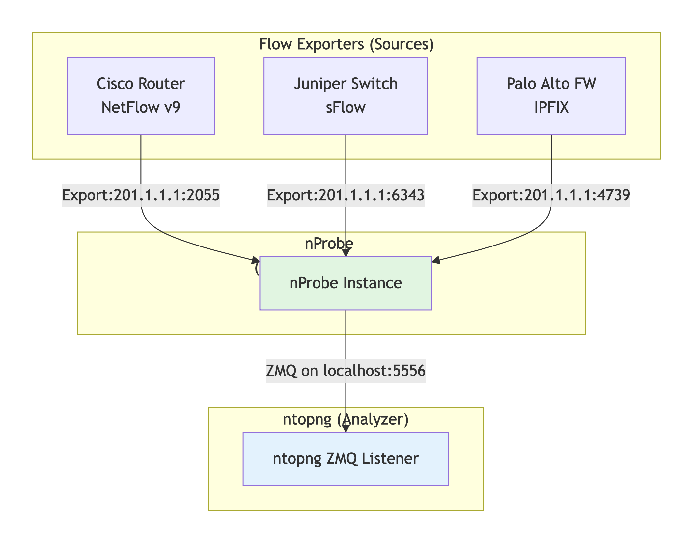
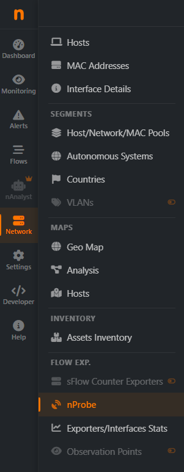
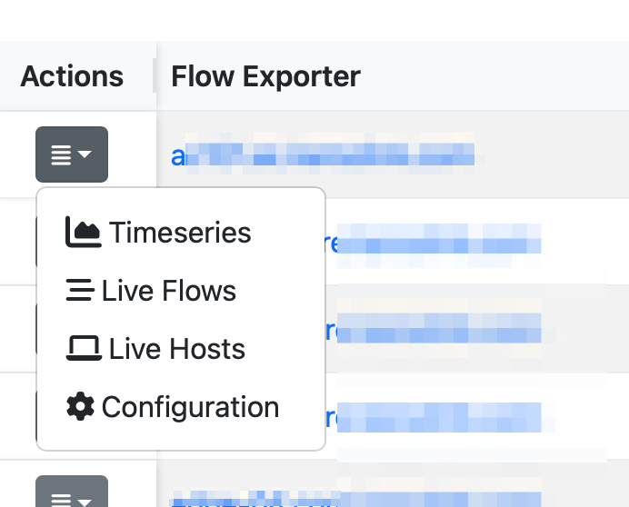

Flow Exporters
A flow exporter is any network device or software that generates and sends flow data to a collector. It’s essentially the source of flow information in network monitoring.
Key exporters caracteristics include:
Flow Creation: Examines packets and groups them into flows based on 5-tuple (source IP, destination IP, source port, destination port, protocol)
Statistics Aggregation: Counts bytes, packets, tracks TCP flags, timestamps
Protocol Support: Exports in a specific flow format (NetFlow v5/v9, IPFIX, sFlow)
Configurable Export: Destination IP/port, sampling rate, template refresh rates

In the above figure
All exporters send to nProbe, not directly to ntopng
nProbe becomes the single exporter from ntopng’s perspective
ntopng sees flows coming from nProbe’s IP (e.g., 127.0.0.1)
Management happens at nProbe level:
Configure exporters to send to nProbe’s IP:port
nProbe handles protocol translation, load balancing
Exporters are “hidden” from ntopng
Exporters in ntopng
Flow exporters are accessed from the menu on the left sidebar, Flow Exp. section:


Exporters are listed under the nProbe instance that collects flows from. You can read statistics abotu collected flows, drops and active license.
Sites
On large networks you can define sites on which exporters are active so you can cluster them based on their location.

Sites can be configured from the above menu and you set its location under the configuration menu entry.


Exporter sites are reported in various ntopng pages such as the live flow page or the dashboard. If you have enabled historical flows you can search for flows according to a site.
The bandwidth usage per application of the exporter interfaces is described in Exporter Interfaces Bandwidth Usage per Application.